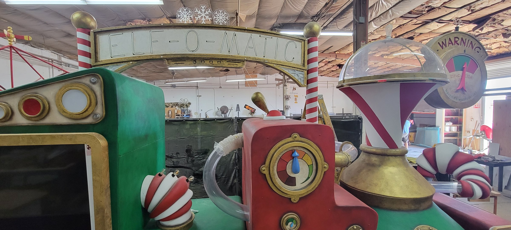
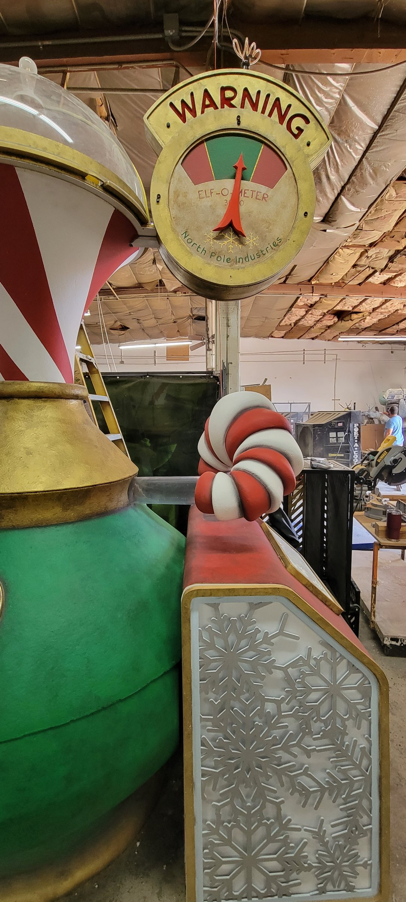
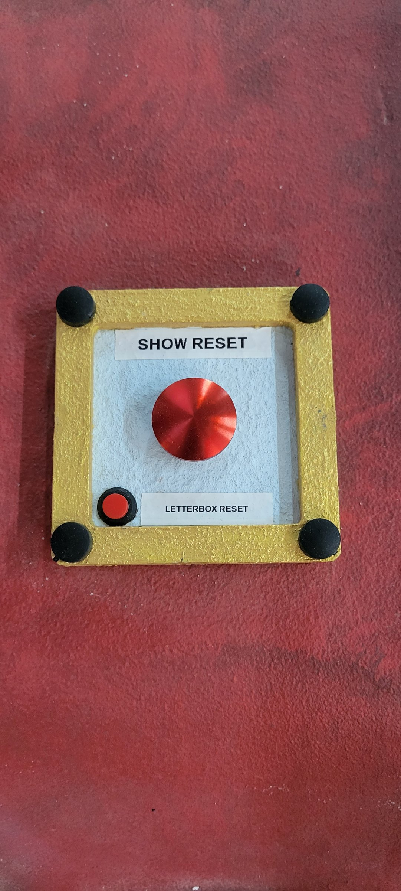
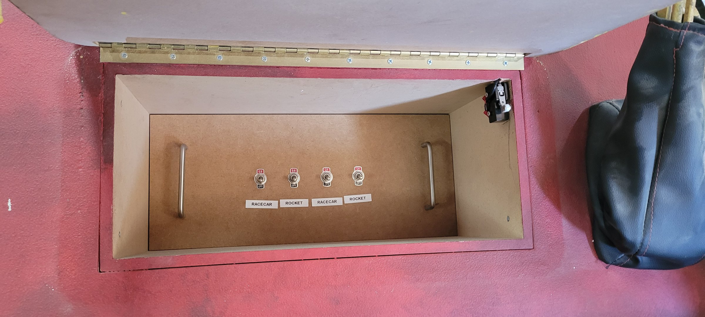

FA22, Monster City Studios
Technical Designer & Project Manager
Elf-O-Matic-3000
A holiday show piece built at Monster City Studios: a steam-powered candy machine with a neon marquee, a lit viewing window of tumbling balls, a STEAM grille, a pressure gauge and a candy-striped dome. Behind the theming is a working show, with lighting, moving parts and an operator panel to reset it between guests.



